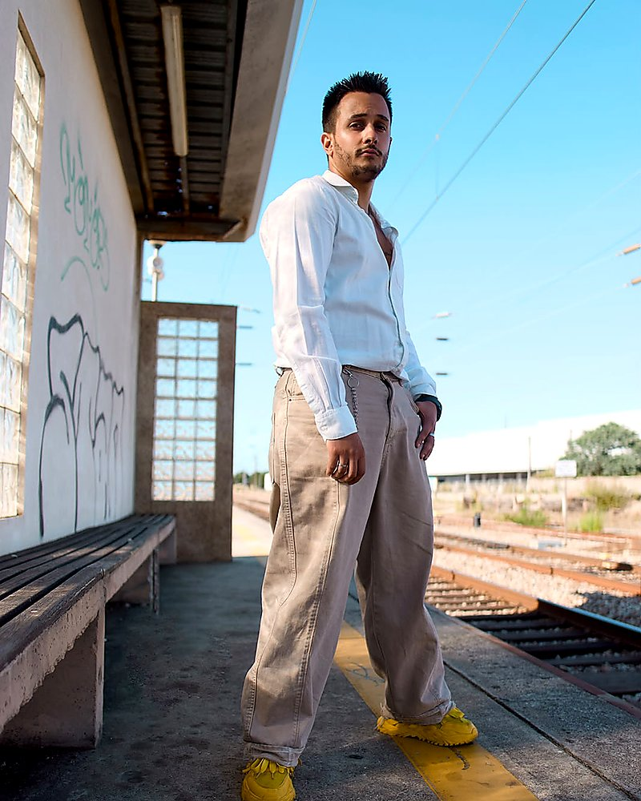

Ruben
Rodrigues
Programador e especialista em IA, 26 anos, Esmoriz - Portugal. Uso modelos de IA todos os dias e transformo esse uso em produtos para pequenas empresas: websites, landing pages, integrações e reparações de código.Developer and AI specialist, 26, from Esmoriz - Portugal. I use AI models every day and turn that into products for small businesses: websites, landing pages, integrations and code repairs.
Antes disto: estágio na Freedom Outdoor, onde construí o Provador; operador de robô na Ferreira de Sá; e atendimento ao cliente no Pingo Doce, onde aprendi que servir bem faz parte do produto.Before this: an internship at Freedom Outdoor, where I built O Provador; robot operator at Ferreira de Sá; and customer service at Pingo Doce, where I learned that serving well is part of the product.
- IdadeAge
- 26 anos26 years old
- BaseBase
- Esmoriz, PT
- EstadoStatus
- A construir o portefólioBuilding portfolio

O trabalho não é o resultado. É o sistema por trás dele.The work isn't the result. It's the system behind it.
Cada briefing passa por mais do que um modelo. As linhas no diagrama são o caminho real: de uma ideia confusa a três entregáveis concretos.Every brief goes through more than one model. The lines in the diagram are the real path: from a messy idea to three concrete deliverables.
Começar pela pergunta.Start with the question.
As ferramentas vêm depois. Defino o resultado, o cliente e a restrição antes de escrever um único prompt.The tools come after. I define the outcome, the client and the constraint before writing a single prompt.
Tornar o invisível visível.Make the invisible visible.
Cada prompt que importa é guardado, numerado e anotado. O processo faz parte do portefólio.Every prompt that matters is saved, numbered and annotated. The process is part of the portfolio.
Servir o cliente primeiro.Serve the client first.
Prazos claros, linguagem simples, sem tecnicismos. Um cliente feliz faz parte da entrega - não é um pormenor.Clear deadlines, plain language, no jargon. A happy client is part of the delivery - not a footnote.